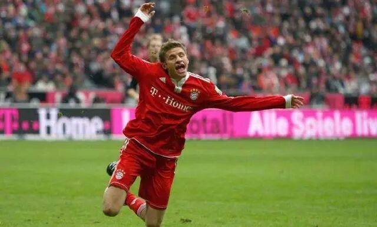
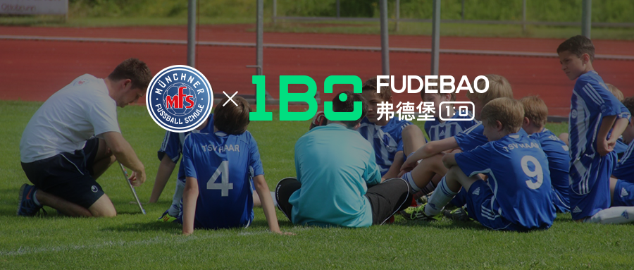
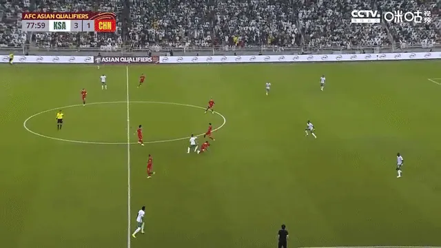

当今世界足坛的众多球星中，托马斯穆勒无疑是最独特的那一个。
与同级别的球员相比，他的停球、传球、盘带、射门等技术水平绝对处于平均水准之下，除了出色的体能外，身体素质也是平平无奇。

但穆勒就是可以成为最优秀的“做饼大师”，诚然，这是依靠穆勒强大的空间阅读和无球跑位能力，而我认为更重要的是，穆勒在场上总能保持一个最积极的心态。
穆勒在场上，每次看到空当一定会积极的跑位，即是10次里面有8次队友球都没有传过来，但是他还是会一次一次的跑位；每次丢失球权后，他会带领全队组织就地反抢。每空必跑，每球必争，球队丢球也不沮丧。
不仅自己如此，他还能带动身边的队友，前两个赛季很多空场的比赛，我们能很清楚的听到穆勒在场上不断的向队友喊话，不断的称赞和鼓励队友，把积极的心态传递给全队。场下的穆勒亦是如此，是著名开心果，用自己的积极乐观感染队友，训练中球队氛围总是其乐融融，相当于有一个全队训练效果加10%的buff在。
#1
弗德堡
毫无疑问，积极的心态对球员的成长和场上表现都有正面促进作用，那么如何在青训过程中帮助孩子培养积极的心态呢？答案就是正反馈。
我们为什么喜欢踢足球？相信大家最开始喜欢上踢球的原因都很简单，无外乎是成功把球掌握在脚下的满足感，一脚注入全身力量的射门带来的爽快感。这其实就是足球带来的正反馈刺激，让我们越来越喜欢足球。
因此，孩子12岁之前需要以动作技巧为核心，利用正反馈的方式构建技术训练，这个在之前的文章中已经有过详细的阐述
同样的，1对1对抗中先练进攻后练防守，同样是利用过人成功的正反馈刺激和鼓励孩子。
这里想说的是，仅仅依靠训练设计中的正反馈是不够的，更在于教练平时潜移默化对孩子的影响。

比如，孩子在学习某个技术动作时出现错误，作为基层青训教练，不应该批评孩子，而是要平和的找出孩子的问题，耐心的讲解正确的动作要领，在孩子正确完成动作时要及时给予鼓励。
原文含嵌入视频，本地未保存。
可惜，上面这样说起来很简单，但真正长期的执行出来并不容易，因为负反馈有时有着更立竿见影的作用。
当孩子犯错时，立刻批评两句的效果是非常好的，家长、老师、教练这种角色在孩子眼里是既信任又害怕的，教练的批评在孩子心中的分量是很重的，“不再犯错不再让家长和教练批评”，这样的驱动力能给孩子带来充足的动力去纠正错误。
#2
弗德堡
通过批评、骂与惩罚，让孩子及时纠正错误，看上去很OK，执行起来也比上面正反馈的模式要容易，现在的基层教练年轻时大多也是“体工队”模式下成长起来的，因此很自然的就会选择批评孩子。
这样的方式别的运动项目或许行得通，但足球不行
其一，负反馈模式你会发现孩子技术练习中会经常犯错，你需要不断的纠正批评，最后只能用战术上的勤奋掩盖战略上的懒惰
其二，足球是一项需要创造力的运动，而孩子的思维模式是很简单的，批评会让孩子的思维模式和内在驱动力变成“避免犯错”，这种思维模式对球场上的表现是不利的。因为足球的进攻、创造力这些在场上其实都是有风险的选项，“避免犯错”心态下的人很难做出有风险的选择。
这里我们拿国足来举例吧，比如张稀哲，看过他俱乐部比赛的都知道，他的视野还有向前的渗透性传球的能力都是不错的，但为什么到了国家队就只会横穿回传了呢？
张稀哲是典型的在秦皇岛足校体工队模式的负反馈环境中成长起来的，这对他在球场上的心态造成了很大的影响。
所有球员在比赛场上踢球的动力都可以归结为两点：
- 想赢球
- 怕输球、怕犯错
负反馈模式下成长起来的张稀哲，在重大比赛中，尤其面对实力相当或是更强的对手时，“不要犯错不要被批评”就成为了他完成这场比赛的主体驱动力。
一脚向前的渗透性传球有可能帮助球队获得一次进攻机会，但也有可能被对手断球打反击，这种心态下的张稀哲自然不会做这种有风险的选择。

其实不光是张稀哲，国足很多球员都是这样的，这一批国足大多还是在“体工队”模式下成长起来的。这也是解说总说的，国足在大赛上“放不开”的原因。但这种放不开早在他们的青训阶段就已经注定。
反观归化球员洛国富，从小是在巴西“快乐足球”的正反馈氛围中成长起来的。
重大比赛中，他的心态是更加积极的，他比赛的主体驱动力是“想办法看怎么能赢”、“怎么样能搞点事进个球”。
看过去年10月、11月几场国足预选赛的应该能很直观的感受到洛国富和其他国脚的心态差距，怎样的心态是更有助于赢球的，答案不言而喻。
总结
综上，青训过程对球员成长起来以后的球场心态影响是巨大的。我国的体工队模式虽然在别的项目取得了很多成功，但这种“高强度、负反馈”的模式是不适应足球的，因为足球是一项需要创造力、有对抗有风险的运动，不像跳水、体操这样，把自己练好就能胜利的项目有着本质的不同。
因此，基层青训教练一定要注意，不要批评孩子，不要打骂孩子，要多给与指导和鼓励，越是小的孩子越应该如此。
写在最后的思考：作为创业团队，道理是一样的。创业是需要创造力的，因此不能让团队处于一个负反馈的状态下。一旦团队成员都是抱着“避免犯错、避免被批评”的心态在工作，那团队的创造力也就没有了，“不做就不会错”，这对一个创业团队是最为致命的。

文字与图片版权归各自权利人所有；排版根据抓取内容整理。